第03讲 从三个方向看物体的形状
第03讲 从三个方向看物体的形状

课程标准 | 学习目标 |
①掌握从三方向看几何体； ②会画从三方向看几何体。 | 初步体会从三个方向看同一物体时可能看到不同的图形，能识别简单物体的从正面看、从左边看、从上面看； 会画立方体极其简单组合体的三种平面图形； |

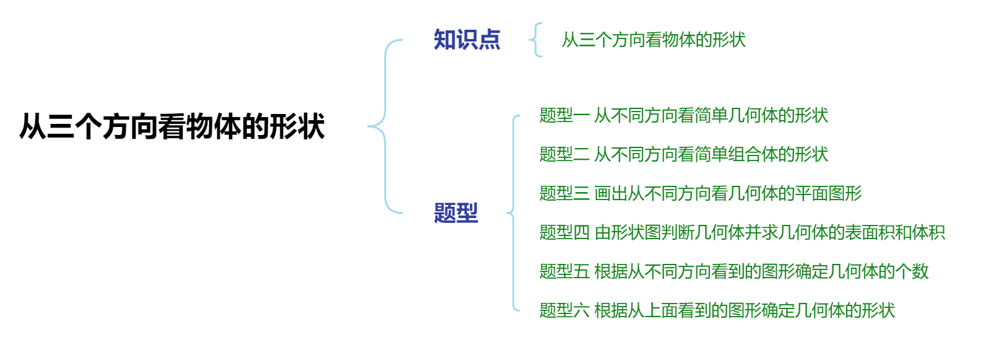

知识点01 从三个方向看物体的形状
一般是从以下三个方向：(1)从正面看；(2)从左面看；(3)从上面看．（如下图）

【即学即练1】
1．（2024·重庆九龙坡·三模）如图，下列几何体由5个大小相同的正方体组成，从上面看到该几何体的形状图是（ ）
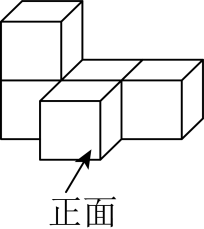
A．
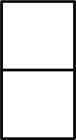
B． C．
C．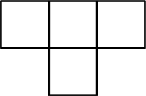
D．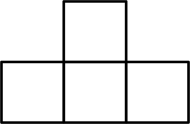
2．（2024·内蒙古呼和浩特·模拟预测）小明自己动手做了一个数学模型，从正面、左面、上面观察它，得到的三视图如图所示，则该模型的形状是（ ）
A．圆锥 B．圆柱 C．三棱柱 D．三棱锥

题型一 从不同方向看简单几何体的形状
【典例1】（2023·贵州·模拟预测）下面几何体中，从上面看，得到的平面图形为圆的是（ ）
A． B．
B．
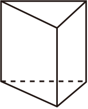
C．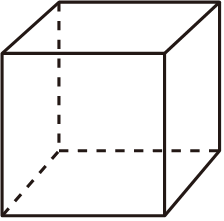
D．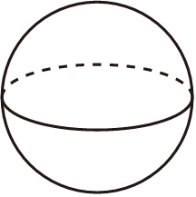
【变式1】（23-24七年级上·贵州毕节·阶段练习）在下列的四个几何体中，其中从正面看与从上面看所得的平面图相同的是（ ）

A．圆柱 B．圆锥 C．三棱柱 D．球
【变式2】（23-24七年级上·山西临汾·阶段练习）如图所示的几何体从正面看到的图是（ ）
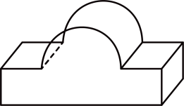
A． B．
B．
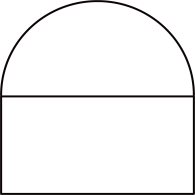
C． D．
D．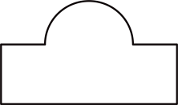
【变式3】（23-24七年级上·吉林白山·阶段练习）如图，一个圆柱体切去一部分，则从上面看到的图形是（ ）
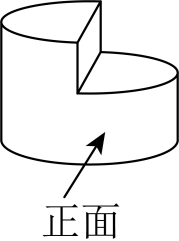
A．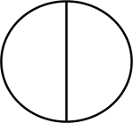
B． C．
C． D．
D．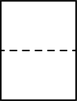
题型二 从不同方向看简单组合体的形状
【典例1】（23-24九年级下·河南驻马店·阶段练习）如图桌上摆放这一个茶杯和一摞书，从上面看到的图形是（ ）
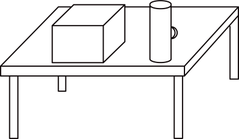
A． B．
B． C．
C． D．
D．
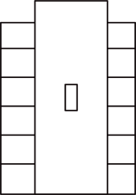
【变式1】（23-24九年级下·广东深圳·开学考试）作为中国非物质文化遗产之一的紫砂壶，成型工艺特别，造型式样丰富，陶器色泽古朴典雅，从一个方面鲜明地反映了中华民族造型审美意识．如图是一把做工精湛的紫砂壶“景舟石瓢”，下面四幅图是从上面看到的图形的是（ ）
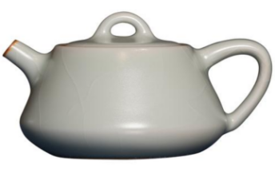
A． B．
B．
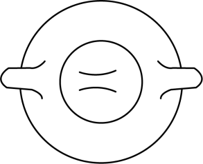
C． D．
D．
【变式2】（23-24七年级上·贵州黔南·期末）如图所示为两只水平摆放的水杯，从上面看到的图象为( )

A．
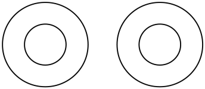
B． C．
C．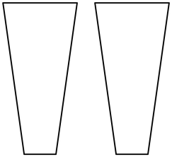
D．
【变式3】（23-24九年级上·陕西西安·期末）如图所示的几何体，从上面看到的形状图是（ ）
A． B． C．
B． C． D．
D．
题型三 画出从不同方向看几何体的平面图形
【典例1】 （23-24七年级下·陕西西安·开学考试）从正面、左面、上面三个方向看该立体图形，分别画出看到的平面图形．

【变式1】（23-24七年级上·广东佛山·阶段练习）如图，请分别画出从正面、左面和上面观察该几何体看到的形状图．
【变式2】（23-24七年级上·甘肃张掖·阶段练习）如图是由9个小立方块搭成的几何体，请画出从正面、左面、上面看到的几何体的形状图．

【变式3】（23-24七年级上·贵州毕节·阶段练习）如图，在平整的地面上，用多小正方体堆成一个几何体．
请你画出从正面、左面和上面观察该几何体看到的形状图．

题型四 由形状图判断几何体并求几何体的表面积和体积
【典例1】（23-24六年级上·山东淄博·期末）如图，这是某工厂车床工作间某工件的从三个方向看到的图形，工人借助直尺测量了部分长度，根据图中数据求该工件的体积．
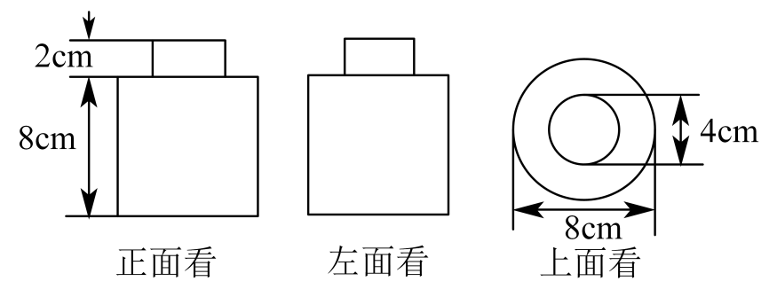
【变式1】（23-24七年级上·山西太原·阶段练习）一个长方体从左面、上面看到的平面图形如图所示（单位： ），则该长方体的体积是
），则该长方体的体积是
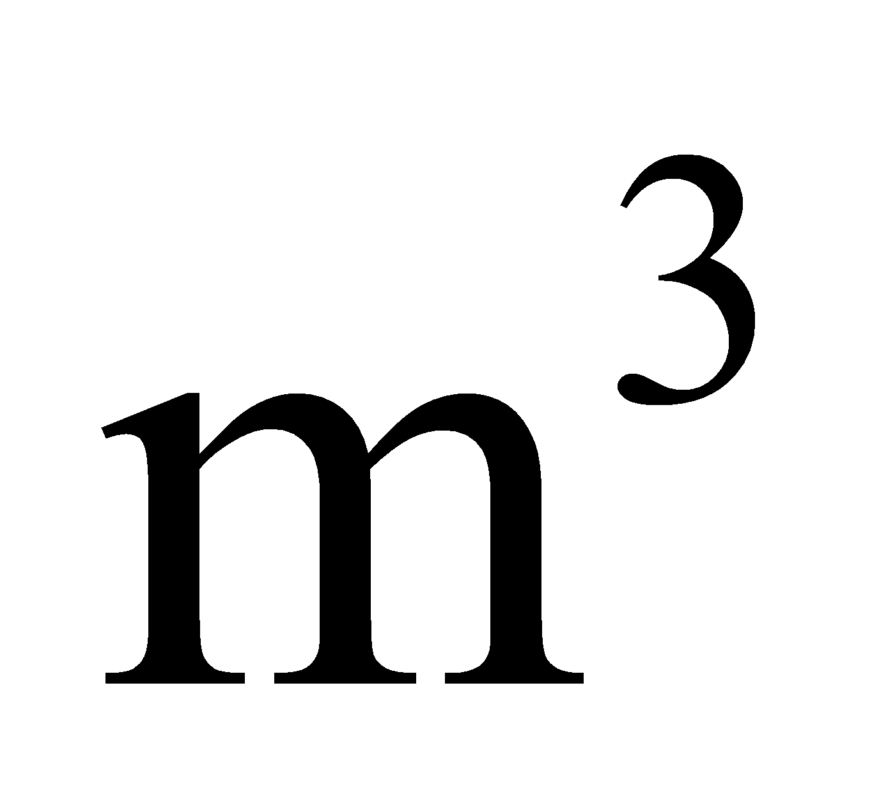
．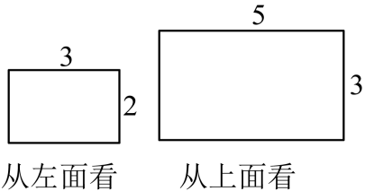
、【变式2】（2023春·江西鹰潭·七年级统考期中）超市货架上摆放着某品牌红烧牛肉方便面，如图是从三个方向看得到的形状图，则货架上该方便面至少有 盒．
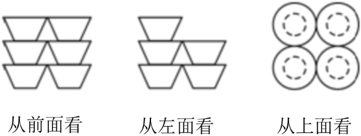
【变式3】（23-24七年级上·广东佛山·阶段练习）如图所示的是从不同方向观察一个几何体得到的形状图
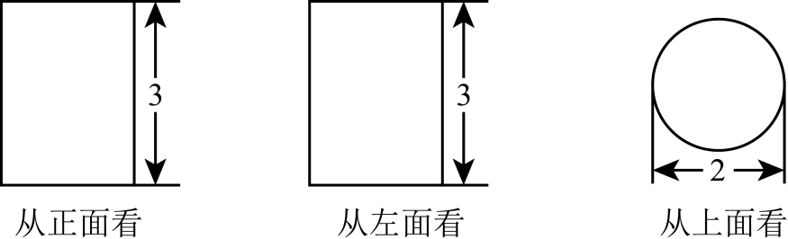
从正面看 从左面看 从上面看
(1)这个几何体的名称是______；
(2)由图中数据计算此几何体的侧面积（结果保留 ）
）
(3)画出该几何体的大致展开图．
题型五 根据从不同方向看到的图形确定几何体的个数
【典例1】（23-24七年级上·江西吉安·阶段练习）如图1，在平整的地面上，用8个棱长都为1cm的小正方体堆成一个几何体．

(1)请利用图2中的网格画出这个几何体从正面看、从左面看和从上面看到的形状图（一个网格为小立方体的一个面）．
(2)图1中8个小正方体搭成的几何体的表面积（包括与地面接触的部分）是 cm2．
【变式1】（23-24六年级上·山东烟台·期中）如图所示是由几个小立方体所组成几何体的俯视图，小正方形中的数字表示在该位置的小立方体的个数．
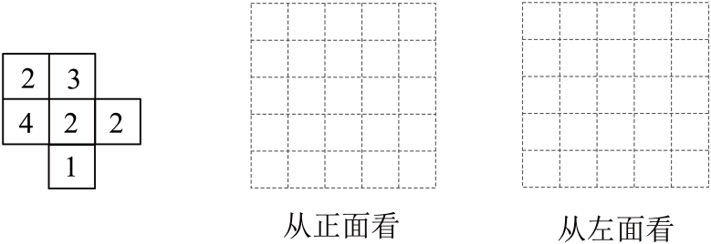
(1)请在下面的网格中画出这个几何体从正面和从左面看到的图形；
(2)若小立方体的棱长为 ，求该几何体的表面积．
，求该几何体的表面积．
【变式2】（23-24七年级上·贵州毕节·期末）用相同的小立方块搭一个几何体，从正面、上面看到的形状图如图所示，从上面看到的形状图中小正方形中的字母表示在该位置上小立方块的个数，请回答下列问题：
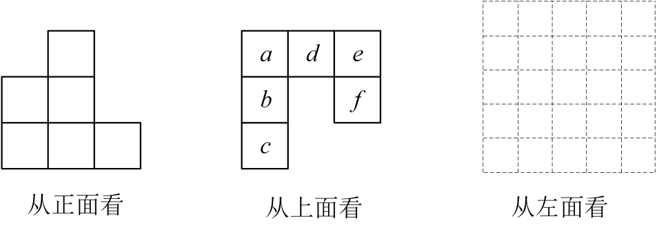
(1)填空： __________，
__________， __________．
__________．
(2)请在如图的网格中画出当 ，
，
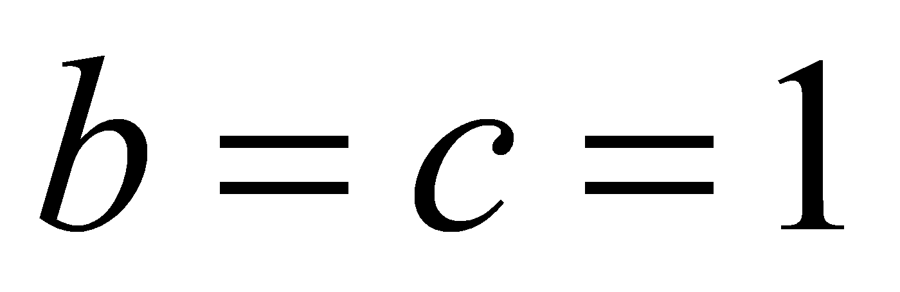
时这个几何体从左面看到的形状图．(3)这个几何体最少由多少个小立方块搭成？最多由多少个小立方块搭成？
【变式3】（23-24七年级上·贵州贵阳·期中）一个几何体由若干大小相同的小立方块搭成，下图分别是从它的正面、上面看到的形状图．
(1)该几何体至少是______块小立方块搭成的；
(2)该几何体最多是用______块小立方块搭成的；
(3)当搭成该几何体的小立方块最多时，画出从左面看到的几何体的形状图．
题型六 根据从上面看到的图形确定几何体的形状
【典例1】 （23-24七年级上·山西太原·阶段练习）一个几何体是由大小相同的小立方块搭成，其中小正方形上的数字表示在该位置上的小立方块的个数，请画出从正面和从左面看到的这个几何体的形状图．

【变式1】（23-24七年级下·黑龙江大庆·开学考试）如图是由小正方体组成的立体图的俯视图，数字表示小正方体的个数，请画出从正面看和从左面看该立体图的图形．
【变式2】（23-24七年级上·广东佛山·阶段练习）如图，这是一个由小正方体搭成的几何体从上面看得到的平面图形，小正方形中的数字表示该位置的小正方体的个数，请你画出它从正面看与从左而看到的形状图．
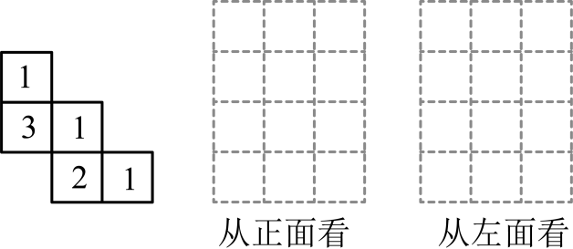
【变式3】用 个相同的小立方块搭成几何体．从上面看到的几何体的形状图如图
个相同的小立方块搭成几何体．从上面看到的几何体的形状图如图 所示．其中小正方形中的数字表示在该位置的小立方块的个数．
所示．其中小正方形中的数字表示在该位置的小立方块的个数．
(1)请在图 中画出从正面和左面看到的这个几何体的形状图；
中画出从正面和左面看到的这个几何体的形状图；
(2)如果现在你还有一些大小相同的小立方块，要求保持从正面和左面看到的形状图都不变，最多可以再添加 个小立方块．
题型七 根据从不同方向看到的形状图确定几何体的可能情况
【典例1】（23-24七年级上·四川成都·期末）一个几何体由若干大小相同的小立方块搭成，下图分别是从正面、上面看到的形状图，则搭成这个几何体的小立方块最多有 个．

【变式1】（22-23七年级上·四川成都·期中）由若干相同大小的小正方体组成的几何体，从不同方向看到的图形如图所示，则组成该几何体最多需要小正方体个数为 ．

【变式2】（23-24六年级上·山东威海·期末）一个几何体由若干个大小相同的小立方块搭成，右图是从正面、上面看到的形状图，组成这个几何体最多需要 个小正方体．
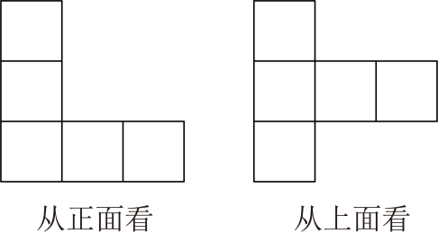
【变式3】（23-24七年级上·河南驻马店·期末）一个几何体由若干个大小相同的小立方块搭成，如图分别是从它的正面、左面和上面看到的形状图，该几何体至少是用 个小立方块搭成的．

一、单选题
1．（2024·黑龙江绥化·三模）圆柱如图摆放，则从正面观察这个几何体得到的平面图形是（ ）

A． B． C．
B． C． D．
D．
2．（23-24六年级下·黑龙江哈尔滨·期中）如图所示，下面简单几何体从正面看到的平面图形是（ ）
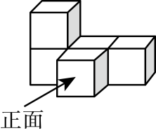
A． B． C． D．
C． D．
3．（23-24六年级下·全国·假期作业）如图中4个立体图形，从左面看到的平面图形是四边形的有（ ）

A．1个 B．2个 C．3个 D．4个
4．（23-24七年级上·广东佛山·阶段练习）如图，用小立方体搭一个几何体，从左面和上面看如图所示，这样的几何体它最多需要（ ）块小立方体
A．8 B．7 C．6 D．5
5．（23-24七年级上·福建厦门·开学考试）在棋盘上叠一些中国象棋棋子，从上面、左面、正面看到的图形如图，这些棋子共有（ ）个．
A．12 B．11 C．8 D．7
二、填空题
6．（22-23七年级上·辽宁盘锦·期末）如果一个立体图形的从三个不同方向（正面、左面、上面）看到的平面图形均是一样的图形，则该立体图形是 ．
7．（22-23七年级上·安徽淮南·开学考试）下图中的三个物体，它们都是由相同的小立方体搭成的．从( )看，看到的形状是完全相同的．

8．（23-24六年级上·山东威海·期中）一个几何体由几个大小相同的小立方块搭成，从上面观察这个几何体，看到的形状如图所示，其中小正方形中的数字表示在该位置的小立方块的个数．若小立方块的棱长为2，则这个几何体的表面积是 ．

9．（23-24七年级上·河南郑州·阶段练习）如图是由棱长相等的小立方体摆成的几何体从正面看与从上面看到的形状图，根据图形可以判断组成这个几何体最多要 个小立方块，最少要 个小立方块．
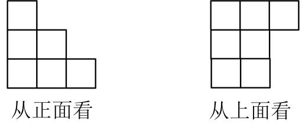
10．（23-24七年级上·河北廊坊·期末）如图，这是由6个棱长为 的小正方体拼成的一个几何体．
的小正方体拼成的一个几何体．

（1）则该几何体从正面看到的图形的面积为  ．
．
（2）将小正方体①移走后，所得几何体从 看不变．（填“正面”“左面”或“上面”）
三、解答题
11．（23-24七年级上·贵州贵阳·期中）从正面、左面、上面观察如图所示的几何体，分别画出你所看到的形状图．

12．（23-24七年级下·陕西榆林·开学考试）用若干个大小相同的小立方块搭一个几何体，使得从正面和从上面看到的这个几何体的形状图如图所示.请画出所有的从左面看到的这个几何体的形状图.

13．（23-24七年级上·陕西西安·期中）已知一个“粮仓”从不同方向看的图形如图所示（单位： ），根据图中所给的数据求出它的容积．（参考公式：
），根据图中所给的数据求出它的容积．（参考公式： ，
， ，结果保留
，结果保留 ）
）
14．（22-23七年级上·河南郑州·期末）如图是由 个相同的小立方体组成的几何体．
个相同的小立方体组成的几何体．

(1)请画出从正面看，从左面看，从上面看的平面图形；
(2)现量得小立方体的棱长为 ，现要给该几何体表面涂色（不含底面），求涂上颜色部分的总面积．
，现要给该几何体表面涂色（不含底面），求涂上颜色部分的总面积．
15．（22-23九年级上·河北唐山·期末）从不同方向观察一个几何体，所得的平面图形如图所示，
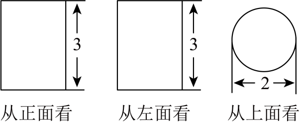
(1)写出这个几何体的名称：______；
(2)求这个几何体的侧面积和体积．（结果保留）
16．（23-24七年级上·山东青岛·阶段练习）一个物体是由棱长为 的正方体模型堆砌而成的，其从不同方向看到的形状图如图所示：
的正方体模型堆砌而成的，其从不同方向看到的形状图如图所示：
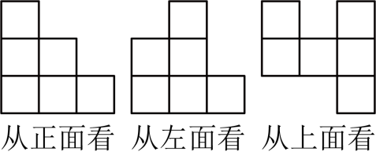
(1)请在从上面看到的形状图上上标出小正方体的个数；
(2)求该几何体的体积；
(3)求该几何体的表面积．
17．（23-24七年级上·辽宁沈阳·期末）用若干个棱长为1cm的小立方块搭一个几何体，使它从正面和上面看到的形状图如图所示，从上面看到形状图中小正方形中的字母表示在该位置上小立方块的个数．请回答下列问题：
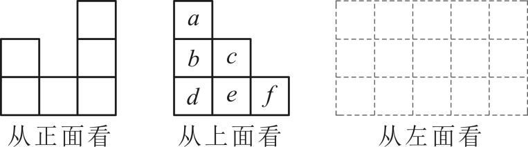
(1) __________，
__________， ____________；
____________；
(2)该几何体最少由__________个小立方块搭成，最多由__________个小立方块搭成；
(3)从左面看这个几何体的形状图共有__________种，请在所给网格图中画出其中的任意一种．
18．（23-24六年级上·山东东营·期中）如图，是用几个相同的正方体搭出的几何体，请解答下列问题：

(1)分别在方格纸中画出从正面、左面、上面看这个几何体时看到的图形；
(2)如果在这个几何体上再添加几个相同的小正方体，使新几何体和原几何体分别从上面和从左面看到的形状相同，添加小正方体个数最少可以摆______个，最多可以摆______个．
(3)若每个小正方体的棱长为 ，要给这个几何体地面以上的部分涂上颜色，求涂色部分的面积；
，要给这个几何体地面以上的部分涂上颜色，求涂色部分的面积；